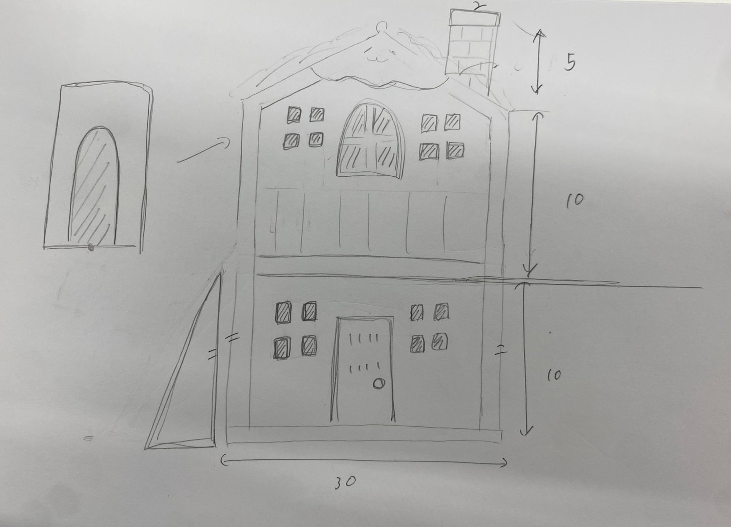
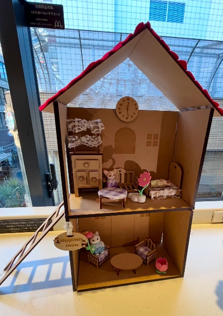
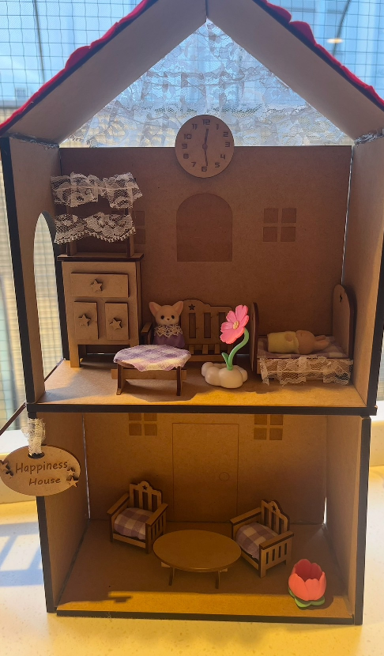

第5回 最終プロジェクト
Happiness House
シルバニアファミリーの家🍀～〜
★構想段階のスケッチ★

★完成品の写真★


みりさんとなーこさんと協力してシルバニアファミリーのオリジナルハウスを作成。
1階にあるテーブル、いす、2階にある棚、机、ソファー、ベッド
家全体をすべてイラストレーターを使って作成した。
ポイントはシルバニアファミリーの家と言えば赤い屋根のイメージがあったので、赤い屋根にしたところ。
家を組み立てるときにMDFの幅を考慮しながら何回も作り直したところが大変であったが、
構想しながら作るのはとても楽しかった。